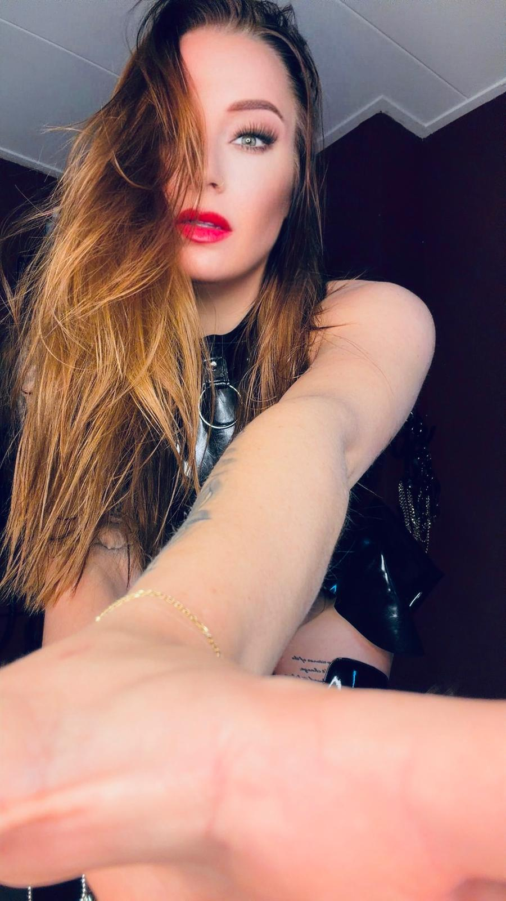
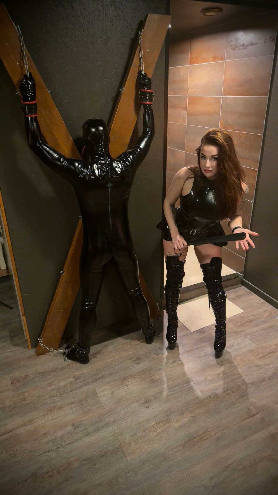

Bio
Ik ben Isla Vayne. Mijn wereld draait om de kunst van aanwezigheid: een sfeer neerzetten, grenzen scherp krijgen en precies weten wanneer zachtheid plaatsmaakt voor controle.
Voor mij gaat het niet om haast. Ik hou van spanning die wordt opgebouwd, van duidelijke kaders en van een dynamiek waarin vertrouwen de basis vormt.

Wie ik ben
Vrouwelijk, direct en stijlbewust.
Ik voel me thuis in een wereld van luxe details, sterke energie en ritme. Mensen die bij mij komen, zoeken vaak niet alleen intensiteit, maar ook focus, aandacht en een duidelijke leiding.
Ik geloof dat echte overgave pas ontstaat wanneer communicatie helder is. Daarom werk ik met rust, precisie en respect voor grenzen. Juist daar ontstaat ruimte voor spanning, verdieping en een ervaring die blijft hangen.
Mijn uitstraling is donker, rijk en elegant, met bordeaux, goud en leer als vanzelfsprekende verlenging van mijn sfeer. Geen chaos, maar controle met intentie.
Mijn stijl
- Luxe en vrouwelijke kracht
- Discretie en volwassen energie
- Structuur, discipline en aandacht
- Een duidelijke balans tussen spanning en rust
Controle voelt het sterkst wanneer alles daaromheen klopt.
Wat je kunt verwachten
Geen haast, wel richting.
Of het nu online is of real life, ik werk het liefst met mensen die bewust kiezen. Iemand die weet dat spanning sterker wordt wanneer de opbouw klopt, en dat wederzijds respect nooit onderhandelbaar is.
Voor mij is stijl niet alleen wat je ziet, maar ook wat je voelt in de manier waarop iets wordt geleid. Helder, verfijnd en met volledige aandacht.
